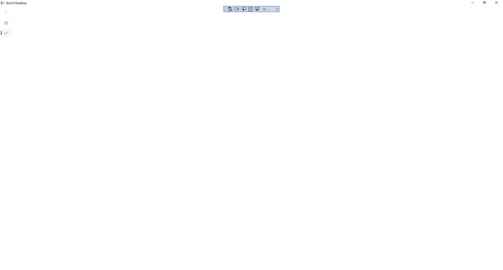
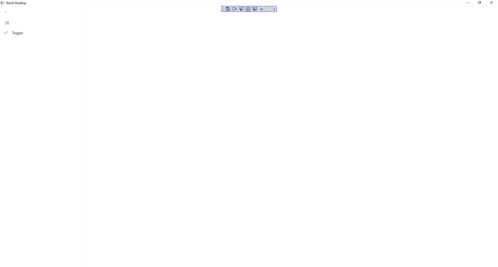

Navigation view
Learn to use the Navigation View in Windows App SDK with this Tutorial

Navigation View shows how you can use the NavigationView with the Windows App SDK allowing for the use of hamburger-menu style navigation within an application.
Step 1
Follow Setup and Start on how to get Setup and Install what you need for Visual Studio 2022 and Windows App SDK.


Step 2
Step 3
In the XAML for MainWindow.xaml there will be some XAML for a StackPanel, this should be Removed:
<StackPanel Orientation="Horizontal"
HorizontalAlignment="Center" VerticalAlignment="Center">
<Button x:Name="myButton" Click="myButton_Click">Click Me</Button>
</StackPanel>
Step 4
While still in the XAML for MainWindow.xaml above </Window>, type in the following XAML:
<NavigationView Name="Navigation" IsSettingsVisible="False" IsPaneOpen="False">
<NavigationView.MenuItems>
<NavigationViewItem Content="Toggle" Tapped="Toggle_Tapped">
<NavigationViewItem.Icon>
<SymbolIcon Symbol="Accept"/>
</NavigationViewItem.Icon>
</NavigationViewItem>
</NavigationView.MenuItems>
</NavigationView>
NavigationView is a Control that is used to display a hamburger-menu style of navigation with an application,
it has the Property of IsPaneOpen set to False so the Pane will not be open at first.
The NavigationView also has a set of MenuItems which contains the items to be used in the NavigationView
which in this case is a NavigationViewItem with the Text of Toggle and the Icon for Accept which when Tapped or Clicked will toggle
if the Pane for the NavigationView is displayed or not, also done with the "hamburger" button at the top.
Step 5
Step 6
In the Code for MainWindow.xaml.cs there be a Method of myButton_Click(...) this should be Removed by removing the following:
private void myButton_Click(object sender, RoutedEventArgs e)
{
myButton.Content = "Clicked";
}
Step 7
Once myButton_Click(...) has been removed, below the end of public MainWindow() { ... } type in the following Code:
private void Toggle_Tapped(object sender, TappedRoutedEventArgs e)
{
Navigation.IsPaneOpen = !Navigation.IsPaneOpen;
}
The Method of Toggle_Tapped will be triggered when the NavigationViewItem of
Toggle is Tapped or Clicked, this will set the Property for IsPaneOpen of the
NavigationView to be the opposite of itself.
IsPaneOpen is a bool which means it can either be true or false, the ! is the
not-operator and this will change anything that is true to false, and anything
false to true and this can be used to Toggle the value of the Property for
IsPaneOpen.
Step 8
Step 9
Once running you should see the NavigationView with the NavigationViewItem with the Icon for Accept which is a "tick" and above this is the "hamburger" button.

Step 10
If you Tap or Click on the NavigationViewItem with the Icon for Accept, this will show or hide the Pane
for the NavigationView which you can also do by Tapping or Clicking on the "hamburger" button and
allow you to see the Text of Toggle and you can Click or Tap this to hide the Pane again.

Step 11